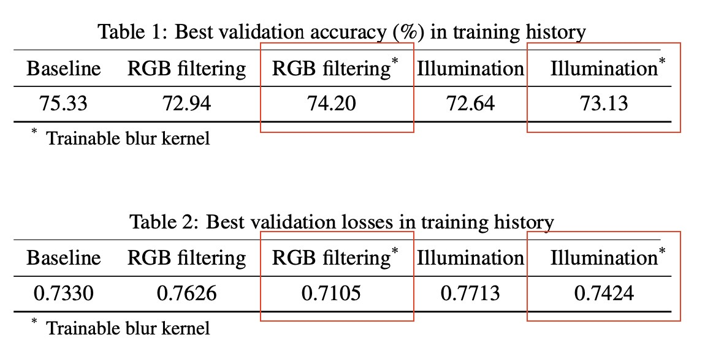
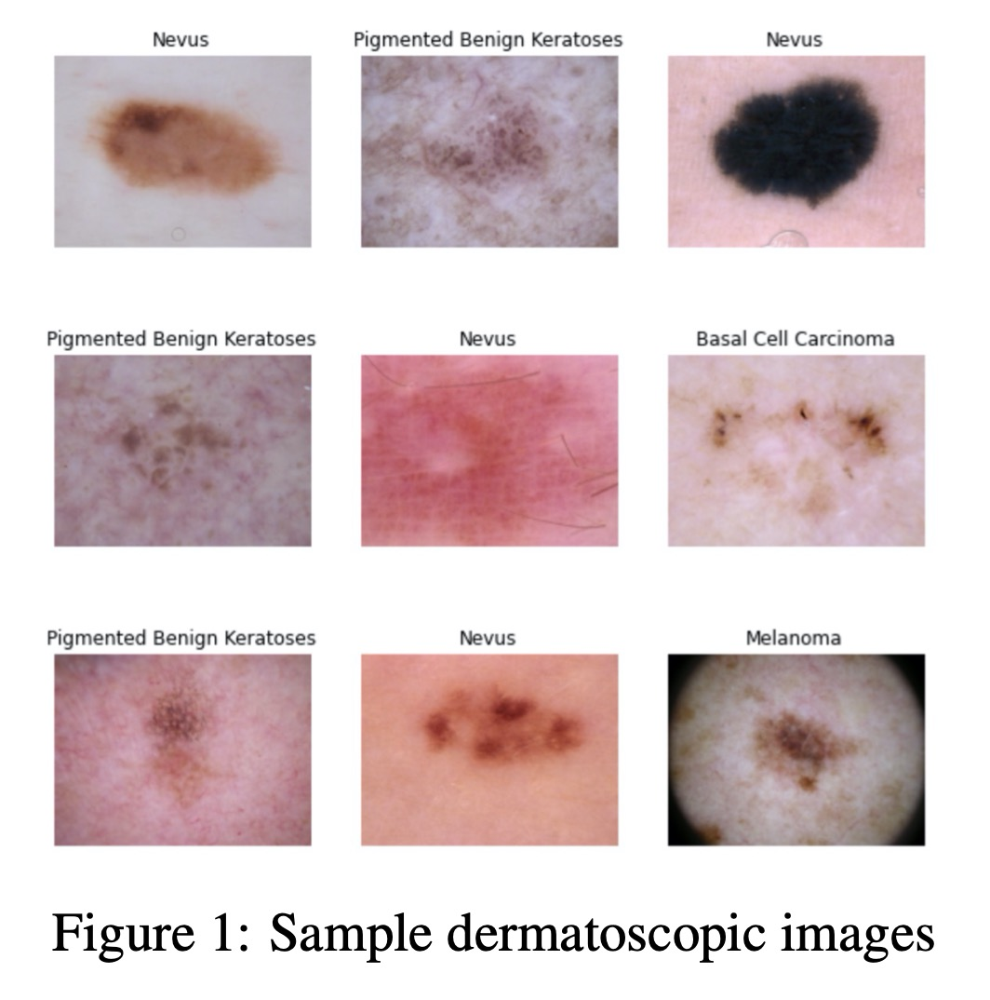

| Paper PDF |
 
|
With skin cancer being one of the most common cancer in the US society, the number of patients who are diagnosed with skin cancer has been rapidly increased over the past decade. To prevent disease from advancing to later stages and thereby increasing the survival rate, there is demand for early detection with high accuracy, which sometimes can be difficult to achieve during the regular diagnosis process. Hence, in recent years the research community has geared efforts towards developing deep learning solutions to help with lesion diagnosis and benefit patients for quick and better results. Our results show that by carefully incorporating physical layer with illumination pattern extractor into convolutional neural networks can yield competitive classification accuracy while providing more explainable patterns to potentially help us design better physical devices and digital process for skin lesion diagnosis.
|
|
|
| Paper: |
Data:
|